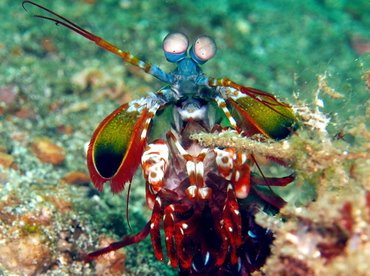

Fatos sobre o Stomatopoda
Informações Gerais
Odontodactylus scyllarusTambém conhecido como lagosta-boxeadora
Reino, Filo, Subfilo, Classe, Subclasse e Ordem
Onde Vive
É uma espécie de tamarutaca nativa do Indo-Pacífico, de Guam até a África Oriental. Vive em tocas que constrói nos fundos dos corais, ou através de buracos deixados por outros animais, em rochas e substratos próximos de corais de recifes a cerca de 40 metros de profundidade
Características
Tem coloração verde, com pernas laranjas e com a carapaça com estampas tipo leopardo. Em aquários de água salgada, é uma atração tanto pela coloração quanto pelo perigo
Curiosidades
São capazes de desferir um dos mais rápidos e violentos golpes do reino animal, seu soco fora registrado com uma velocidade de 80 km/h e aceleração similar a uma arma calibre .22
Refrências bibliográficas
- https://www.google.com/search?q=stomatopoda&source=lnms&tbm=isch&sa=X&ved=2ahUKEwiBqOKqroP5AhXfBLkGHesaABoQ_AUoAXoECAIQAw&biw=769&bih=749&dpr=1.6
- https://pt.wikipedia.org/wiki/Stomatopoda